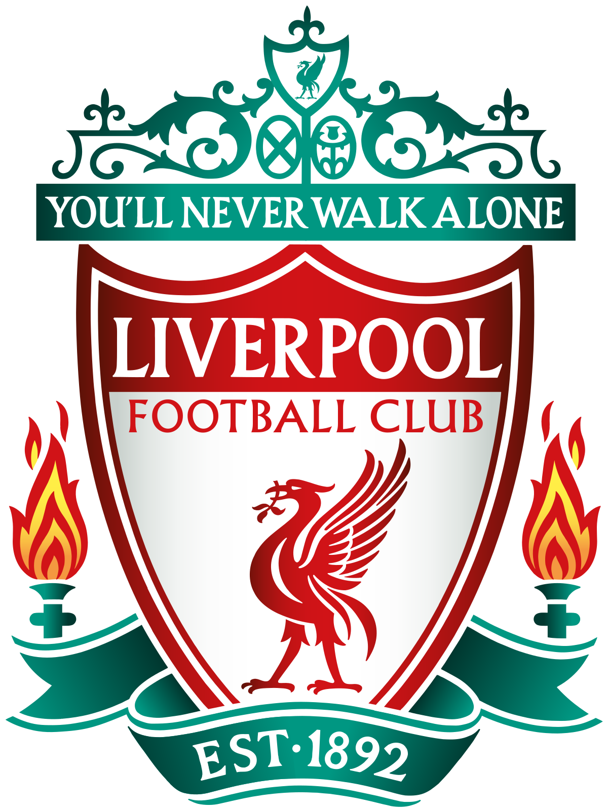

Name: Luke Fernandez
Student Number: s3613289
Nationality: Malaysian
Place of Birth: Pinang Island
Culture: Malaysian Indian
Education to date: Currently studying Bachelor of Design (Games)
Education Institute: Royal Melbourne Institute of Technology (RMIT)
Languages Spoked: English, Malay (National language of Malaysia)
Country of Origin: Malaysia
Religion: Catholic
I am a huge Liverpool FC fan

I like reading, specifically fantasy and science fiction novels
My favorite sport is football (outdoor soccer) and futsal (indoor soccer)
I love dogs, specifically Labradors and I used to own 3 of them
My all time favorite food is Nasi Lemak with Beef Rendang (A Malaysian Dish)
My interest in IT is in UI development, creating new user interfaces for various platforms to help improve our daily living. My interest in IT started when I was a kid and we got our first PC. My mother bought me a Sinbad video game that instantly captured my imagination and also got me thinking just how the hell does this all work. My curiosity grew even more with appearance of Myspace, Friendster and MSN Messenger and trying to figure out how do these things actually work, how do they connect people and just does the information get passed on between to PC�s. Ever since then, I have always wanted to know more and really understand how this simple box do so much. I know Java and how to use Balsamiq, Invision and Proto.io.
I chose RMIT because of three reasons. The first is because it is universally recognized and well renowned which helps when applying for jobs after graduation. It has a stellar reputation for providing quality education to its students and lastly, RMIT is one of the best universities in the world and I wanted to prove to myself that I excel in this place, that I deserve to be here and the sky is the limit.
I am currently studying game design in RMIT and when I finish I hope to gain knowledge not just in how to become a great game designer but also knowledge in other areas of studies like IT. RMIT is the perfect place for this as they have a wide variety of course and modules available for students to broaden their horizon.